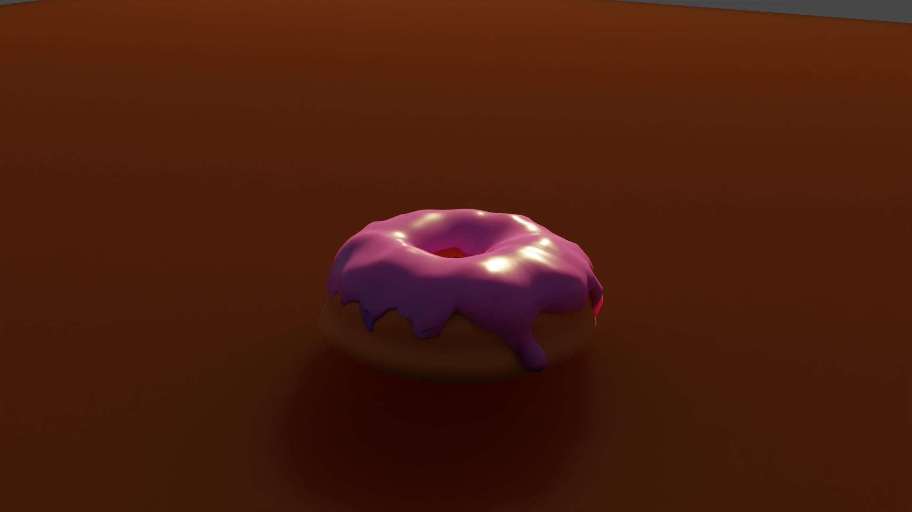
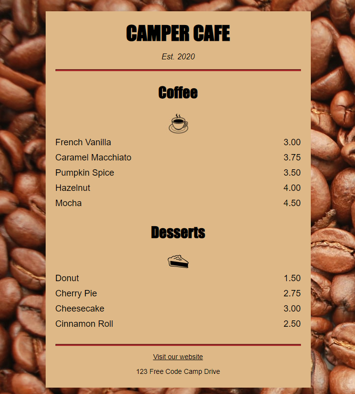

Today seems to be Web-Dev-Day
Hello friends, since I'm feeling a little under the hood today, I decided to give myself a treat and learn some more topics regarding webdesign.
I don't know why, but I really do like to experiment with the different styles. And since there doesn't have to happen too much debugging at the early stages, it feels so much more rewarding than having to compile for some while until your result, which might not be as expected, gets put out by the engine.
So what did I learn today?
- I pretty much learned to develop my own Coffee Shop Menu at FreeCodeCamp with html and css.
- I then decided to complete the new Front End development Course for Web Development. Just to give myself a treat(feel like a workaholic now *Kappa*) -- But don't worry, I won't forget to work on my Unreal project as well!
- And since I am the master of procrastination, I then decided to take up the blender tutorial on youtube by the Channel Blender Guru.
Here is what i accomplished so far:

I couldn't figure out how to get rid of all the edges so I decided to get on with it after catching a breath.
- So how does a self proclaiming workaholic take a breath? Exactly! He finishes the task he was doing previously.
Here is the result!
